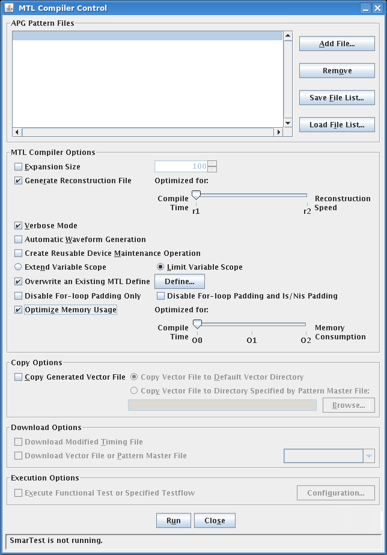
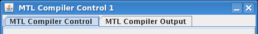

MTL Compiler Control dialog
The MTL Compiler Control dialog provides a graphical user interface for running the MTL compiler.
When the compiler is started from the Memory Test Manager, the MTL Compiler Control dialog is displayed:

The elements of the dialog are discussed below by section.
If the specified APG pattern file contains compilation options specified with the :options: keyword, all dialog settings that have a command-line equivalent are ignored and the internal options of the file are used instead.
Elements of the dialog
Tabs
When the compiler is running or has run, two tabs appear at the top of the dialog:

The MTL Compiler Control tab contains the controls for the compiler, as described below. Because the compiler is already running, these controls are no longer active in the tab, that is, you cannot change any of the settings.
The MTL Compiler Output tab contains the output that the compiler creates during compilation. The tab contains two buttons:
- The Abort button lets you terminate the compilation. When the compilation is completed, it changes to OK. Clicking OK closes the tab.
- Clicking Save As button lets you save the output as a text file.
APG Pattern Files
In this section, you can specify the APG pattern files that are to be compiled. You can specify any number of files, either by adding and removing them manually or by loading file lists:
- Add File: Clicking this button lets you choose an APG pattern file to add to the files that are to be compiled. (You can add multiple files in one step but control-clicking all desired files in the file selection dialog that is displayed.)
- Remove: Clicking this button removes the selected files from the list of files in the dialog.
- Save File List: Clicking this button saves the list of files
currently displayed in the dialog as a file to the disk for later reuse. You can specify the
list file's name and location. Note that the list does not contain the actual pattern files but
only references to them.
Pattern list files must be saved in the default directory /device/mts/pattern_defs/pattern_list. If this directory does not exist, the compiler will create it. Pattern file list have the file name extension .plf. You can edit the pattern file list manually with a text editor if desired; its syntax is described in Pattern list file syntax.
- Load File List: Clicking this button lets you choose a saved pattern list file and open it. This loads the files specified in the pattern list file into the dialog.
MTL Compiler Options
This section lets you specify options for the execution of the compiler. The options correspond to the command line options; details about them are available in apgc command syntax.
- Expansion Size: The maximum size to which for loops can be expanded. Higher settings reduce the probability of data queue empty errors but increase memory consumption. This setting corresponds to the -e command line option.
- Generate Reconstruction File: Reconstruction files are needed to
convert cycle number for errors that have occurred during the test back to addresses for
diagnostic purposes. The three options have different trade-offs between compile time and
reconstruction time:
- r1: faster compilation, fast reconstruction
- r2: slow to very slow compilation, very fast reconstruction. We
recommend this option for devices with many errors.
These settings correspond to the -r1 and -r2 command line options.
- Verbose Mode: Checking this option displays status information throughout the compilation process. This setting corresponds to the -v command line option. Information displayed includes, among others, the size of the generated pattern and the number of tester cycles it requires.
- Automatic Waveform Generation: If this option is checked, the
compiler creates new waveforms where required. Prerequisites and limitations apply, as
described in Automatic waveform generation. This setting corresponds to the -w
command line option.
If the verbose mode is activated (equivalent to the -vw command line option), the compiler generates a usage report for the waveforms in the wavetable. For more information, see Setting up automatic waveform generation.
- Create Reusable Device Maintenance Operation: Checking this option causes the compiler to compile a device maintenance (refresh) operation that is stored in memory separately from the main executable pattern. Details are available in Maintenance operations. This setting corresponds to the -m command line option.
- To cause variables in a
forloop to behave like standard C variables (preserving their value from one iteration to the next), click Extend Variable Scope. To make them behave like in earlier versions of MTL (being reset in each loop iteration), click Limit Variable Scope. This pair of settings is similar to the -evs and -lvs command-line compiler options. Note that the scope of global variables is always extended, no matter the setting of this option. - Overwrite an Existing MTL Define: Checking this option enables the overwriting of variable assignments in the APG pattern file with custom values. Clicking the Define button lets you specify the details.
- Define: Clicking this button opens the MTL Defines dialog in which
you can specify the values of variables for the pattern file. This corresponds to the
-D command line option.
See MTL Defines for a description of the dialog.
- Disable For-loop Padding Only: Checking this option disables padding directly before and at the end of for loops. This corresponds to the -dp0 command line option.
- Disbale For-loop Padding and Is/Nis Padding: Checking this option disables padding directly before and at the end of for loops as well as directly before and after is{} and nis{} instructions. This corresponds to the -dp1 command line option.
- Optimize Memory Usage: If this option is selected, the compiled
vectors are compressed as specified by the slider (O0 - least compile
time; O2 - least memory usage).
This corresponds to the -O0, -O1, and -O2 command line options.
Note that O0 switches off compression, which is recommended for small patterns. O2 takes longer than O1 and usually creates smaller patterns. Sometimes, however, O1 may compress a given pattern more. In cases where having the having the greatest compression is important, you may therefore want to try both O1 and O2 to see which option can compress a given pattern more.
Copy Options
Using these options, you can have the compiler copy the compiled pattern file to a default location or a location chosen by you:
- Copy Generated Vector File: If this option is checked, the compiler
copies the compiled vector file to the specified location. If the Generate
Reconstruction File option is also checked, the reconstruction files are copied to
the same directory. Copying files requires that the APG pattern file that is being compiled is
located in the device directory.
If a file with the same name already exists in the target location, it is renamed by appending .bak. If a .bak file with that name already exists, it is overwritten by the renamed file.
- Copy Vector File to Default Vector Directory: The files are copied to the default vectors directory <device_name>/vectors.
- Copy File to Directory Specified in Pattern Master File: If this option is chosen, you can choose a pattern master file using the Browse button. The compiled pattern files are then copied to the same directories in which the source .apg files are located. Note that this applies only to .apg files that are included in the pattern master file.
Download Options
This section contains options to make the compiler automatically download certain files to the tester after compilation. They are available only if Automatic Waveform Generation is checked (described in "MTL Compiler Options", above).
- Download Modified Timing File: If this option is checked, the MTL compiler automatically downloads to the tester all timing files it modifies in the course of automatic waveform generation.
- Download Vector File or Pattern Master File: If this option is checked, the vector file or pattern master file currently selected in SmarTest is downloaded after the compilation of the selected pattern files finishes.
Execution Options
- Execute Functional Test or Specified Testflow: Checking this option makes the compiler download the compiled pattern into the tester and execute it there. The execution options can be set using the Configuration button.
- Configuration: Clicking this button opens the Execution Dialog window where you can specify options for executing the vector pattern on the tester. The dialog is described in Execution Dialog window.
Status bar
The status bar at the bottom of the dialog displays the status of SmarTest: not running, running, or loaded device.
Command button
Clicking the Run button compiles the selected files according to the specified settings. See Using the MTL compiler from the GUI for more information.
Functional changes
- Introduced before SmarTest 6.3.2
- MTP 3.0.1: Dialog settings are ignored when the APG pattern file contains the :options: keyword
- MTP 3.0.1: New options in the MTL Compiler Options section: Overwrite an Existing MTL Define, Define, Disable For-Loop Padding Only, Disable For-Loop Padding and Is/Nis Padding, Optimize Memory Usage
- MTP 3.0.1: Multiple instances of the dialog can be opened from the MTM
- MTP 3.0.1: Removed the -r0 option